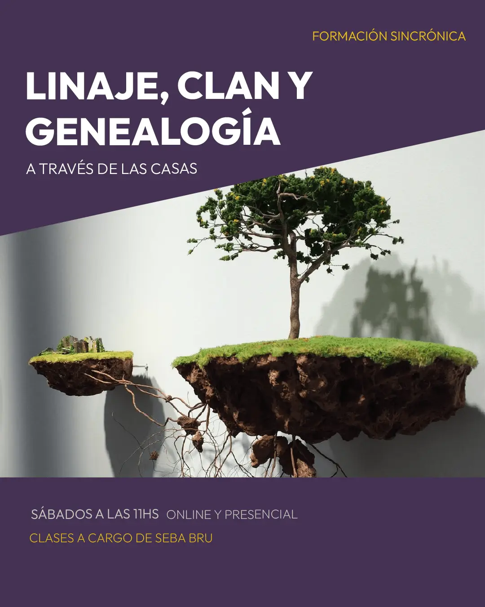
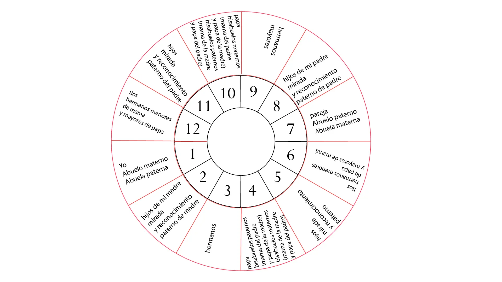

Un seminario para elaborar la relación entre la carta natal y la familia de orígen.
El mapa del cielo nos habla de nuestra esencia, pero ¿qué nos dice de la sustancia con la que esa esencia se vuelve real, tangible, humana?
Incorporando nuevos sentidos a la interpretación de las casas astrológicas podemos acompañar nuestras lecturas de cartas natales con una información que ahonde en la familia y en las raíces ancestrales. El objetivo del seminario es ampliar los recursos en nuestra mirada para identificar las recurrencias y sobrecargas que arrastramos de nuestro árbol y que se evidencian en la carta natal; así como los talentos y las potencias que deja a nuestro alcance nuestro origen familiar.
¿Cómo nos sostiene nuestra tierra y qué sostenemos de nuestros antepasados? ¿Qué desórdenes podemos identificar en nuestra relación con el clan?
Serán cinco encuentros de 2 horas, los sábados de 11 a 13 h, a partir del 17/10.
Vamos a trabajar diferentes indicadores y modos de pensar y evaluar la relación con la familia y la posición que ocupamos en el linaje. Abordaremos una mirada profunda sobre los personajes de la familia y cómo encontrar los puntos pegados o sobrecargados en la memoria familiar. Nos detendremos especialmente en los vínculos fundamentales con la madre y el padre, diferenciando a los personajes y sus particularidades con la función psíquica con la que se relacionan; ensayando modos de separar la función de los personajes.
La cursada estará a cargo de Sebastián Bru.
Incluye materiales de lectura complementarios, un certificado de asistencia y accesos a las clases grabadas durante un año.
Un pago de $70.000 (50u$d)- o dos cuotas de $40.000 (30u$d)
